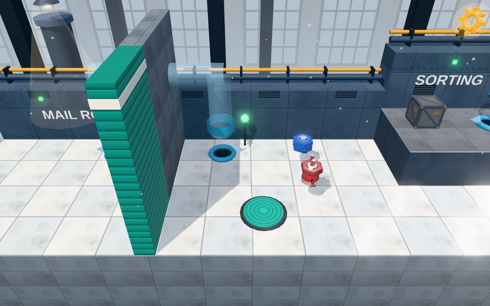

Bolt & Nut
A 3D couch co-op about magnets, opposites, and a very patient orientation facilitator.

What's inside
33 shifts of two-player magnet puzzles, plus 37 Overtime bonus puzzles and a golden cog hidden in every level. Belts, lasers, springs, fans, pneumatic tubes, oil spills, wall magnets and a narrator who is doing her best.
Every level is open from the start, so you can jump to any shift at any time.
Install on the Deck
- In Desktop Mode, tap the red button above. The file lands in
Downloads. - In Dolphin, move it to
/home/deck/Games(next to Wick & Shade is fine). - Right-click it → Properties → Permissions → tick Is executable → OK.
- Open Steam → Games → Add a Non-Steam Game to My Library… → Browse… → pick the file. Set the file type to All Files if it's hidden.
- Return to Gaming Mode and launch it from your library.
Updating? The file name stays the same, so just replace the old file (tick Is executable again) and your Steam shortcut keeps working.
Controllers
On Who is who?, each player presses A on their own controller. The first press is Bolt, the second is Nut. Only one controller? Press Y on it to share it. Keyboard works too: WASD + Space + E for Bolt, arrows + / + . for Nut.
No controller at all? A phone works: open couch-coop-games.vercel.app/pad on it (or scan the QR code on the join screen) and type the four-letter code.
Bolt holds X to pull. Nut presses X to push. Y moves the narrator along, and Start opens hints.
Black screen?
The Deck app starts in safe graphics mode, which uses a simpler look so it stays smooth. For the full look (textures, shadows, glow), try Options → Graphics engine → graphics card. If the screen goes black, wait 15 seconds and it switches back by itself. The browser version always uses the graphics card.